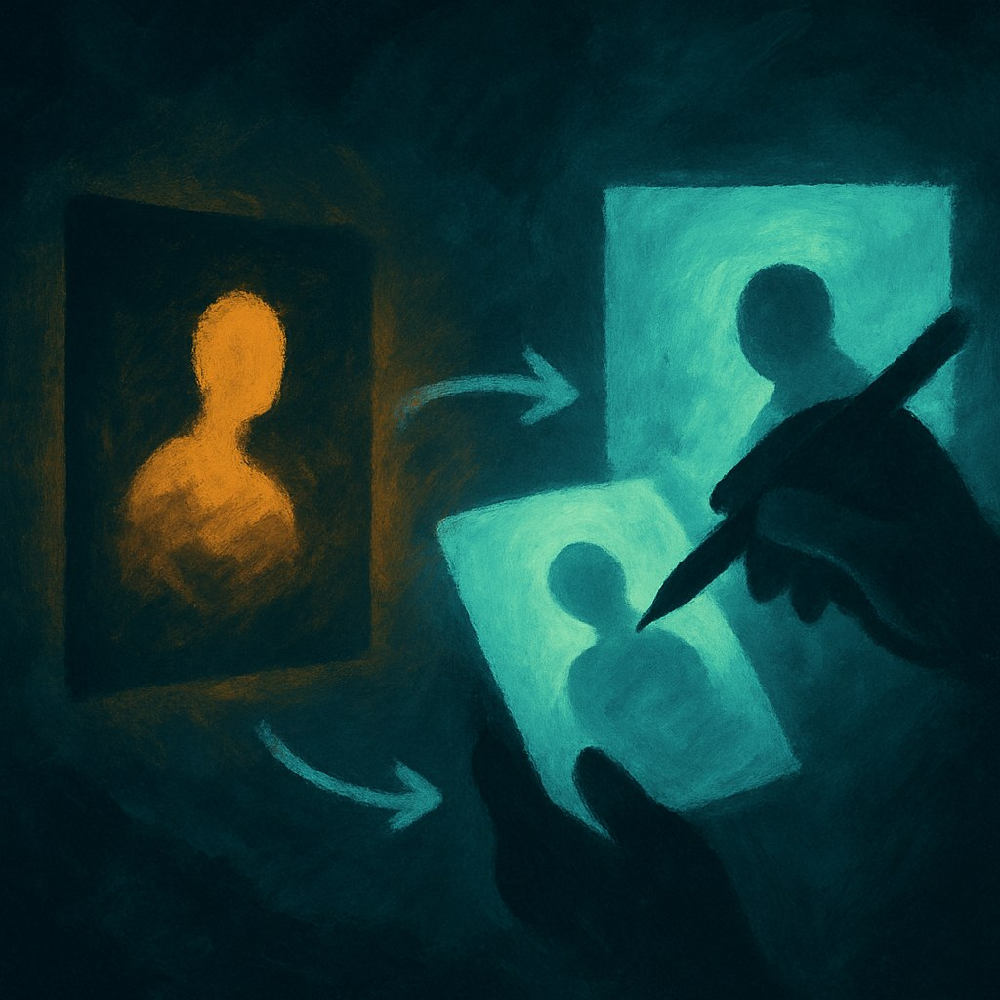
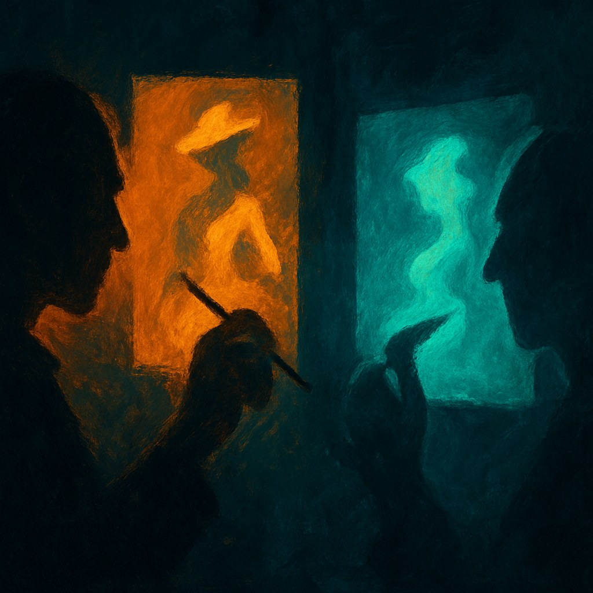

Let's start with the easy case. When Suno admitted it trained on copyrighted recordings and called it fair use, the RIAA sued. Universal settled. Warner settled. Sony is still fighting. That's not a philosophical argument about whether style can be owned. That's a company ingesting protected property, building a product that competes directly with that property, and hoping the courts don't notice. The U.S. Copyright Office's May 2025 guidance said the quiet part loud: using copyrighted works to train models whose outputs directly compete with those works likely exceeds fair use. That's a real line, clearly drawn.
The Andersen v. Stability AI case is messier, and more interesting. The claim isn't that Midjourney copied a specific Sarah Andersen comic. It's that the model was trained on her work, that users can now prompt for images 'in the style of Sarah Andersen,' and that this produces commercial competition with her without consent or payment. A federal court let those claims proceed to discovery in August 2024. The question isn't settled. But it's legitimate. There's a real difference between a human artist absorbing influences over a career and a model fine-tuned specifically to replicate a named living person's commercial output on demand.
The Competition Problem Is Real Even When the Law Isn't Clear
A 2025 ACM CHI study fine-tuned image models on four professional illustrators and found something worth sitting with: style transfer copies surface aesthetics but misses what the researchers called the 'emergent quality' of a real style. The AI version is, in some technical sense, shallower. But the artists still felt economically threatened, because clients often cannot tell the difference. That's the actual injury. Not metaphysical theft of creative essence. Lost commissions from buyers who get close enough for cheap.

A DACS survey found 74 percent of artists worry their work is used to train AI models, and 84 percent would join a licensing system to be paid for that use. That second number matters. Most working artists are not arguing that AI should be banned or that style should be legally owned forever. They want to be in the transaction. That's a reasonable position, and it's different from wanting protection from competition itself.
Where the Complaint Gets Weaker
Here's where some of the grievance loses me. 'Style' has never been ownable. A human illustrator can spend years studying James Jean or Moebius, absorb that influence completely, and sell work that looks a lot like either of them, legally and ethically. The tradition of apprenticeship, of homage, of genre convention, is built on style being shared and evolved. If a model produces generic fantasy illustration in a broad aesthetic category, that's not fundamentally different. Calling it theft because it's faster or because a machine did it is an argument about feelings, not property.
The honest version of the artist complaint is narrower and stronger: training on my specific named work to enable on-demand impersonation of me, at commercial scale, without consent, is different from general aesthetic influence. That case is plausible. The broader claim, that AI style transfer is inherently theft because it makes competition easier, is really a complaint about productivity. Which is understandable. It's just not the same thing.
The law is catching up slowly, licensing frameworks are being floated, and the Copyright Office has finally started drawing distinctions that mean something. The artists who focus on the substitution problem, the direct-competition problem, the consent-and-payment problem, are going to win some of those fights. The ones demanding protection from a changed market probably won't, and shouldn't.
